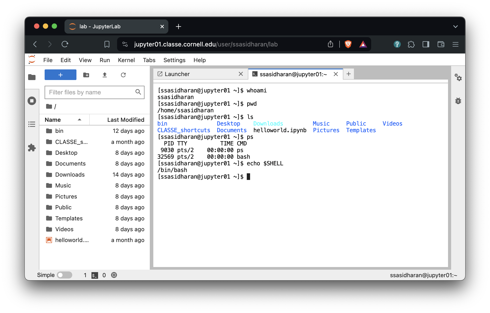
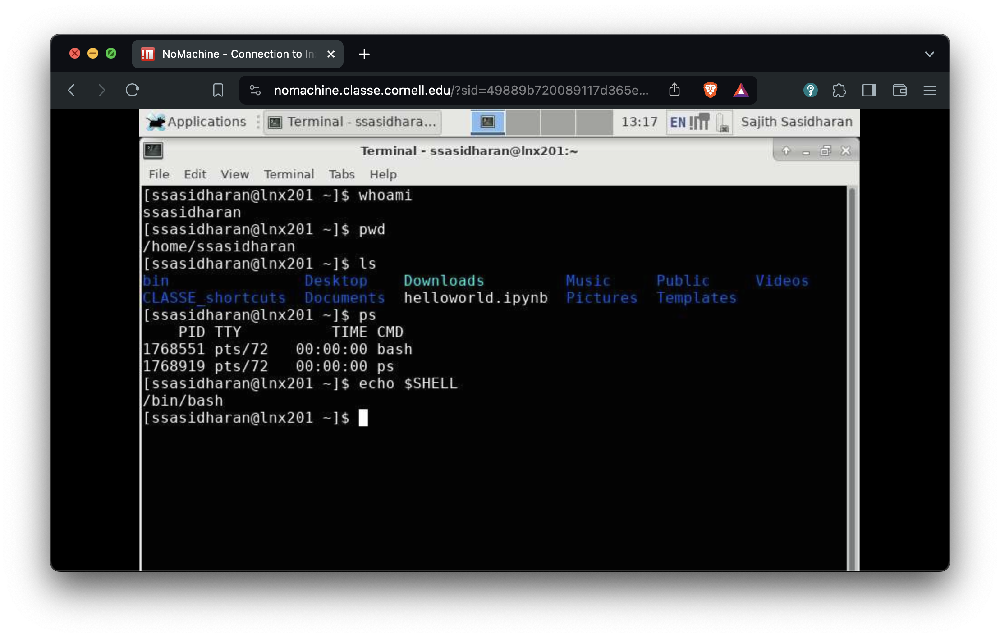
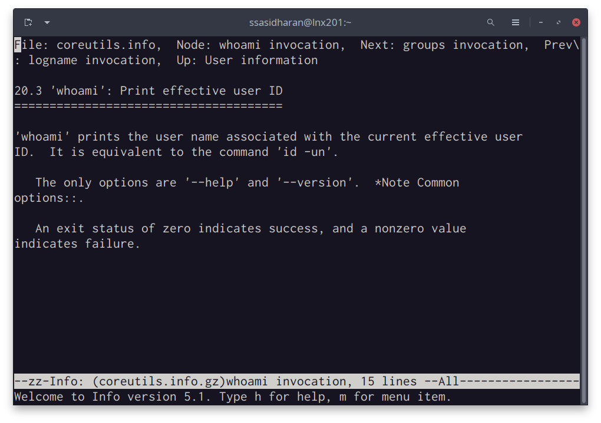
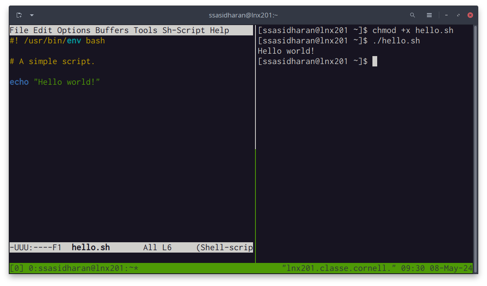

Linux, Command Line, and Scripting
The following notes assume that you are all set up to use your accounts on the CLASSE Linux systems.
- You know how to use
sshto accesslnx201.classe.cornell.edu(justlnx201henceforth); or - You know how to launch a terminal from CLASSE JupyterLab instance; or
- You know how to use NoMachine to access
lnx201.
Depending on your level of familiarity with the system, you might know enough commands to find your way around. Since it probably is not a good idea to make such assumptions right off the bat, let us see what you might need to know to in order to become a proficient user of the systems.
Slides accompanying these notes are available in HTML format.
Linux
Linux is a free and open source operating system known for stability, security, and versatility. Linux runs on a variety of machines from small embedded systems to powerful servers. A great deal of software runs on Linux.
You probably know all this already, so let us skip ahead.
The command line
To perform certain kinds of tasks, using the command line is often quicker and more efficient. You can “chain” or compose separate programs together, each of them specializing in doing different things. You can save longer tasks in the form of scripts for later use, and share them with your colleagues.
Here’s a quick example. You will find documentation for the software installed on lnx201 in the directory /usr/share/doc. Many of those are named README, or README.md, or README.rst, or readme.txt, or some such variation. How many such files are there in /usr/share/doc?
We can find that out by using find (a program for searching for files under a directory tree) and wc (a word count program):
[ssasidharan@lnx201 ~]$ find /usr/share/doc/ -iname "readme*" | wc -l
1589Many of the files in /usr/share/doc mention the word “license” or “LICENSE” or some variation thereof. How many such lines are there? In order to find that out, we can use grep (a program that matches patterns), and wc together:
[ssasidharan@lnx201 ~]$ grep -ir license /usr/share/doc/ | wc -l
84089Learning to use the command line well will leave more power on your hands.
The shell
A shell is an interactive program that accepts commands and passes those commands to the operating systems to execute.
In the shell, you type a command, hit enter, and the command gets executed. Shell is the program that is responsible for accepting your commands, executing them, and printing the results on a console.
Nearly all Linux distributions ship a shell named bash. In the lnx201 environment that you access, bash is the default shell. You will be staring at a bash prompt when you ssh to lnx201.
The screenshots below shows a how this works in practice.
Using a terminal program, I’m using ssh command to access lnx201, and then I’m running some commands on lnx201.

Or you can use CLASSE’s JupyerLab, and then can launch a terminal (from File > New > Terminal from the menu, or the “Terminal” icon on the launcher):

Or you might be accessing CLASSE NoMachine, either with a client or with a web browser. You can launch a terminal from the desktop menu:

Although bash is the most popular shell, many other shells exist too: csh, ksh, dash, zsh, and so on. But let us not get distracted and just commit to bash for now.
Using the shell prompt
The [ssasidharan@lnx201 ~]$ thing with a blinking cursor at the end is called a shell prompt. You type commands at the shell prompt, hit enter, and then something happens in response to that.
The examples in these notes are my shell prompt: it contains my username on lnx201, followed by @ character, followed by the name of the computer (or “hostname”), followed by the current directory. Your prompt will be different, because it will contain your username.
After entering the first few characters of a command, you can use the tabtab key for auto-completing commands.
[ssasidharan@lnx201 /]$ ssh<tab>
ssh ssh-agent sshd sshfs ssh-keyscan
ssh-add ssh-copy-id sshd-keygen ssh-keygen sshpass
[ssasidharan@lnx201 /]$ condor_<tab>
Display all 119 possibilities? (y or n)Bash offers some helpful methods for editing and navigating the history of commands you have previously executed.
- You can use up/down arrow keys to navigate history.
historycommand will print a list of recently used commands.- You can use Ctrl-RCtrl-R to search command history.
- Ctrl-ACtrl-A will make the cursor to the beginning of the line.
- Ctrl-ECtrl-E will go to the end of the line.
- Ctrl-KCtrl-K will “kill” (cut) text from current position to end of line to a buffer called the “kill-ring”.
- Ctrl-YCtrl-Y will “yank” (paste) most recently killed text from the kill ring to current cursor position.
- Alt-YAlt-Y will cycle through the kill-ring.
To exit the shell, you can use exit command or Ctrl-DCtrl-D.
If you are using ssh to connect to lnx201, exiting the shell will end your ssh session. If you had opened a terminal window, exiting the shell will close the window.
Finding help
On the topics covered here in these notes, there is a wealth of information out there: in the form of books, articles, videos, courses, and so on.
You can also find some built-in documentation in the system itself.
Often you can find help for the programs that you run by passing --help argument to them. For example:
[ssasidharan@lnx201 ~]$ whoami --help
Usage: whoami [OPTION]...
Print the user name associated with the current effective user ID.
Same as id -un.
--help display this help and exit
--version output version information and exit
GNU coreutils online help: <http://www.gnu.org/software/coreutils/>
For complete documentation, run: info coreutils 'whoami invocation'As the above text suggests, another way to find manuals is by running the command info. Below is the result of running info coreutils 'whoami invocation' as the above example suggests:

The info program runs a text-based documentation browser. You can move the cursor using tab or arrow keys, and use enter key to follow the links. A lot of the essential software on Linux, including bash, is made by GNU project, and info is their choice of documenting software.
A lot of the other software has Unix roots, and their documentation tend to be in the form of man (short for “manual”) pages. You can run man <program-name> to read those. Running man ssh will display ssh program’s man page.
Man pages are divided into several sections: try running man man to find out what they are.
You can run man -k <pattern> or apropos <pattern> to search man pages, and it will print a list of manual pages that contains the matching pattern.
Yet another place to look for documentation is the folder /usr/share/doc, where some additional documentation for software packages installed in the system are available.
Environment variables
During a session, the shell maintains some information in what is known as environment variables. They are key-value pairs: programs can look up values by keys, and use that information.
To list the environment variables present in your session, use printenv command:
[ssasidharan@lnx201 ~]$ printenv
HOSTNAME=lnx201.classe.cornell.edu
TERM=xterm-256color
SHELL=/bin/bash
HISTSIZE=1000
SSH_CLIENT=152.54.3.220 50338 22
SSH_TTY=/dev/pts/6
USER=ssasidharan
MAIL=/var/spool/mail/ssasidharan
PATH=/usr/lib64/qt-3.3/bin:/usr/local/bin:/usr/bin:/usr/local/sbin:/usr/sbin:/opt/puppetlabs/bin:/home/ssasidharan/bin
PWD=/home/ssasidharan
LANG=en_US.UTF-8
HOME=/home/ssasidharanThis omits some lines for the sake of brevity, but you get the idea.
Some of these environment variables are worth knowing:
USERis your username onlnx201.HOMEis your “home” directory onlnx201. This is where you keep your files and folders.SHELLis the shell you use currently.PATHis a list of directory names, separated by:(colon) character. When you enter a command on the shell prompt, the shell will search directories inPATHto locate the program that it needs to run.
To print an individual environment variable, use echo command:
[ssasidharan@lnx201 /]$ echo $PATH
/usr/lib64/qt-3.3/bin:/usr/local/bin:/usr/bin:/usr/local/sbin:/usr/sbin:/opt/puppetlabs/bin:/home/ssasidharan/binThe $ prefix tells echo that PATH is an environment variable. Without the $ prefix, echo PATH will simply print the string PATH.
How does bash set up the environment?
There are two kinds of shell sessions: login and non-login. login session starts when you enter a username and password, such as when using ssh. A non-login session starts when you open a terminal window from a desktop.
Depending on how the session was started, a few shell scripts are read and executed when starting a shell.
For login shells these will be:
/etc/profileis a global script that applies to all users.
~/.bash_profileis a script in your home directory, and it is applied when you start a shell.- If
~/.bash_profilewas not found, bash will attempt to read~/.bash_loginand~/.profilein order.
For non-login shells:
/etc/bashrcis the script that applies to everyone.~/.bashrcis the script that applies to you.
Non-login shells also inherit the environment from their parent process, which is usually a login shell.
Systems vary on how they are set up. You should look around lnx201 to find out how this is done there. These files are some examples of shell scripts, which is a topic we’ll visit later in these notes.
Changing environment variables
You can also use export command to overwrite existing environment variables, or add new ones. For example:
[ssasidharan@lnx201 /]$ export HISTSIZE=2000
[ssasidharan@lnx201 /]$ echo $HISTSIZE
2000Note that this change in HISTSIZE applies only to the current shell. It will be forgotten when you exit the shell.
In order to make the change permanent, you will need to add the line export HISTSIZE=2000 to your ~/.bash_profile file.
Standard input, output, and error
Nearly all programs produce output of some kind, and quite often they also accept input.
Following the Unix tradition of “everything is a file”, programs send their output to special files called standard output or standard error, and they read input from standard input. They are also known as stdout, stderr, and stdin, respectively.
I/O redirection
I/O redirection lets us to change where standard output gets printed. To redirect standard output, we use the > operator.
[ssasidharan@lnx201 ~]$ ls -l > ls-output.txtAs a result of redirection, a new file named ls-output.txt will be created. You can view its contents using cat command.
[ssasidharan@lnx201 ~]$ ls -l ls-output.txt
-rw-r--r-- 1 ssasidharan chess 807 Apr 1 17:32 ls-output.txt
[ssasidharan@lnx201 ~]$ cat ls-output.txt
total 4
drwxr-xr-x 2 ssasidharan chess 28 Mar 28 09:36 bin
drwxr-xr-x 2 ssasidharan chess 144 Mar 12 00:27 CLASSE_shortcuts
drwxr-xr-x 2 ssasidharan chess 30 Mar 26 15:22 Desktop
drwxr-xr-x 2 ssasidharan chess 6 Mar 26 15:21 Documents
lrwxrwxrwx 1 ssasidharan chess 31 Mar 26 15:21 Downloads -> /cdat/tem/ssasidharan/Downloads
-rw-r--r-- 1 ssasidharan chess 3254 Mar 7 15:55 helloworld.ipynb
-rw-r--r-- 1 ssasidharan chess 0 Apr 1 17:32 ls-output.txt
drwxr-xr-x 2 ssasidharan chess 6 Mar 26 15:21 Music
drwxr-xr-x 2 ssasidharan chess 6 Mar 26 15:21 Pictures
drwxr-xr-x 2 ssasidharan chess 6 Mar 26 15:21 Public
drwxr-xr-x 2 ssasidharan chess 6 Mar 26 15:21 Templates
-rwxr-xr-x 1 ssasidharan chess 0 Mar 28 13:39 test.sh
drwxr-xr-x 2 ssasidharan chess 6 Mar 26 15:21 VideosNote that if there already was a file named ls-output.txt, the redirection above would have overwritten its contents. You want to be careful about this.
What if you want to discard stdout completely? You can redirect it to the special file /dev/null:
[ssasidharan@lnx201 ~]$ ls -l > /dev/nullIf you want to append stdout to a file instead of overwriting it, you can use >> operator:
[ssasidharan@lnx201 ~]$ ls -l >> ls-output.txtThe < operator is a sort of inverse of the > operator:
[ssasidharan@lnx201 ~]$ echo "Shall I compare thee to a summer’s day?" > sonnet18.txt
[ssasidharan@lnx201 ~]$ cat sonnet18.txt
Shall I compare thee to a summer’s day?
[ssasidharan@lnx201 ~]$ cat < sonnet18.txt
Shall I compare thee to a summer’s day?Pipes
Programs can write to standard output. Programs can also read from standard input. This means we can “chain” them together, such that one programs standard output is “piped” into another program’s standard input.
The operator to do this is | (vertical bar), also known as a pipe, and it is used in this manner: command1 | command2.
[ssasidharan@lnx201 ~]$ ls -l /bin/ | lessThe output of ls -l /bin is fairly large, so we pipe it into less, which allows you to scroll the output backward and forward, using up and down keyboard keys.
You can form longer pipes like this:
[ssasidharan@lnx201 ~]$ ls /bin /usr/bin /sbin /usr/sbin | sort | uniq | wc
4289 4288 46820sortwill sort lines of text files.uniqis used to filter adjacent matching lines the output ofsort.wcis a word count program. It counts lines, words, and bytes present in its input.
Controlling processes
When you run a command, it results in what is called a process. Processes are running instances of programs which use CPU, memory, and possibly other resources.
Listing processes
You can list running processes using ps command:
[ssasidharan@lnx201 ~]$ ps
PID TTY TIME CMD
694411 pts/81 00:00:00 ps
3479688 pts/81 00:00:00 bashBy default, ps prints processes of the current user and terminal in four columns:
PIDis process id.TTYis the terminal associated with the process.TIMEis the elapsed CPU time for the process.CMDis the command that created the process.
Usually there are many more processes running in the system, and sometimes they were started by other users. You can list them, with more detail, by passing some options to ps:
[ssasidharan@lnx201 ~]$ ps -ef | head
UID PID PPID C STIME TTY TIME CMD
root 1 0 0 Jan10 ? 03:14:05 /usr/lib/systemd/systemd --switched-root --system --deserialize 22
root 2 0 0 Jan10 ? 00:01:12 [kthreadd]
root 6 2 0 Jan10 ? 00:12:16 [ksoftirqd/0]
root 7 2 0 Jan10 ? 00:01:10 [migration/0]
root 8 2 0 Jan10 ? 00:00:00 [rcu_bh]
root 9 2 0 Jan10 ? 11:14:26 [rcu_sched]
root 10 2 0 Jan10 ? 00:00:00 [lru-add-drain]
root 11 2 0 Jan10 ? 00:05:22 [watchdog/0]
root 12 2 0 Jan10 ? 00:00:24 [watchdog/1]Run man ps for details.
Programs like top and htop will list processes in friendlier, fancier format.
Background and foreground processes
By default, commands run in the foreground: they do their thing, use the terminal (to read input, print output), and finally exit. You need to wait for a foreground process to end before you start the next one, or use another terminal.
When have a long-running process, you have the option of sending it to the background, using the & operator:
[ssasidharan@lnx201 ~]$ sleep 100 &
[1] 949751You can use Ctrl-ZCtrl-Z to stop a foreground process and send it to the background:
[ssasidharan@lnx201 ~]$ sleep 100
^Z
[1]+ Stopped sleep 100You can list background processes using jobs command:
[ssasidharan@lnx201 ~]$ jobs
[1]- Running sleep 100 &
[2]+ Stopped sleep 100You can bring a background process to foreground using fg command, and you can terminate it using Ctrl-CCtrl-C:
[ssasidharan@lnx201 ~]$ fg 2
sleep 100
^C
[ssasidharan@lnx201 ~]$You can use bg command to resume a stopped background process:
[ssasidharan@lnx201 ~]$ sleep 100 &
[1] 1746205
[ssasidharan@lnx201 ~]$ sleep 100
^Z
[2]+ Stopped sleep 100
[ssasidharan@lnx201 ~]$ jobs
[1]- Running sleep 100 &
[2]+ Stopped sleep 100
[ssasidharan@lnx201 ~]$ bg %2
[2]+ sleep 100 &Terminating processes
Sometimes you might want to terminate a program, perhaps because it is using too much CPU or memory. You can find out the offending program’s ID using ps or top or htop, and then you can use kill command to end the process.
By default, kill sends a signal called SIGTERM (more on signals later). If SIGTERM is unable to terminate the process (such as when the program is ignoring SIGTERM), you can try SIGKILL:
[ssasidharan@lnx201 ~]$ ps
PID TTY TIME CMD
796679 pts/116 00:00:00 bash
1185454 pts/116 00:00:00 ps
1748299 pts/116 00:00:00 sleep
[ssasidharan@lnx201 ~]$ kill 1748299
[ssasidharan@lnx201 ~]$ ps
PID TTY TIME CMD
796679 pts/116 00:00:00 bash
1203470 pts/116 00:00:00 ps
1748299 pts/116 00:00:00 sleep
[ssasidharan@lnx201 ~]$ kill -SIGKILL 1748299
[2]+ Killed sleep 100You can use killall command to kill processes by name:
[ssasidharan@lnx201 ~]$ killall sleep
sleep(1469283): Operation not permitted
sleep(1509215): Operation not permitted
sleep: no process foundIn the above example, you are not running a sleep process, but some other users are, and you are not allowed to terminate them.
Signals
As mentioned above, kill command sends signals to running processes, and we’ve already seen SIGTERM and SIGKILL. Signals are a process control mechanism. They are used to stop, resume, or terminate processes, and more.
When we use Ctrl-CCtrl-C or Ctrl-ZCtrl-Z, we are sending signals to process – SIGINT (or “keyboard interrupt”) and SIGTSTP (or “terminal stop”), respectively.
Signals have numbers: SIGKILL is 9, so you can use kill -9 <pid> instead of kill -SIGKILL <pid>. You can also omit the SIG prefix, and use kill -KILL <pid>.
Here are some common signals:
Signal Value Action Comment
──────────────────────────────────────────────────────────────────────
SIGHUP 1 Term Hangup detected on controlling terminal
or death of controlling process
SIGINT 2 Term Interrupt from keyboard
SIGQUIT 3 Core Quit from keyboard
SIGILL 4 Core Illegal Instruction
SIGABRT 6 Core Abort signal from abort(3)
SIGFPE 8 Core Floating point exception
SIGKILL 9 Term Kill signal
SIGSEGV 11 Core Invalid memory reference
SIGPIPE 13 Term Broken pipe: write to pipe with no
readers
SIGALRM 14 Term Timer signal from alarm(2)
SIGTERM 15 Term Termination signalRun the command man 7 signal to read signal command’s manual page.
A list of (hopefully) useful commands
| Command | Description |
|---|---|
echo |
display a line of text |
cat |
concatenate files and print on the standard output |
head |
output the first part of files |
tail |
output the last part of files |
more |
a “pager”, for printing text one screen at a time |
less |
a pager similar to more, but nicer |
ls |
list directory contents |
mkdir |
make directories |
cd |
change the shell working directory |
cp |
copy files and directories |
rm |
remove files or directories |
grep |
print lines that match patterns |
sed |
stream editor for filtering and transforming text |
awk |
pattern scanning and processing language |
sleep |
delay for a specified amount of time |
tree |
list contents of directories in a tree-like format |
find |
search for files in a directory hierarchy |
du |
estimate file space usage |
gzip/gunzip |
compress or expand files |
tar |
an archiving utility |
ps |
report currently running processes |
top |
display processes |
htop |
a nicer alternative to top |
kill |
send a signal to a process |
killall |
kill processes by name |
ping |
send echo requests to remote hosts |
hostname |
show the system’s host name |
uname |
print system information |
date |
print the system date and time |
cal |
display a calendar |
clear |
clear the terminal screen |
history |
display the command history list |
ssh |
remote login program |
scp |
remote file copy program |
sftp |
secure file transfer program |
wget |
a tool to download of files from the Web |
curl |
another tool to download files from the Web |
Text Editors
Several terminal-based full-screen text editors are available on lnx201, and they vary in power and ease of use. Try these ones and pick one that works for you.
If you use JupyerLab, use the editor there. If you use NoMachine, use the menu system to find an editor that works for you.
Writing shell scripts
The shell also provides a little programming language. You can write commands in a file called a shell script, and make it executable. Shell scripts usually have a .sh filename extension.
Shell scripts are useful when you need to run some complex sequence of commands often.
Here is a simple shell script:
Line number 1 contains a shebang: it tells the shell to how to run the script, or which program should interpret the script. Scripts could be written in other languages and interpreted by programs associated with those languages (such as /bin/python, /bin/perl, or /bin/ruby.), so the shell has to know what to do here.
The line
#! /bin/bashcould as well be#! /usr/bin/env bash, since it is not a good idea to assume that bash will be always in/bin/.To make scripts more portable across various kinds of systems,
#! /bin/shshebang also is often used. On Linux,/bin/shis often a symbolic link to/bin/bash.
Line 2 contains a comment. When shell encounters a # character, everything following it on that line is ignored.
Line 5 contains the command to be executed.
Assuming we’ve named the script hello.sh, we should make it executable with chmod, and run hello.sh:
[ssasidharan@lnx201 ~]$ chmod +x hello.sh
[ssasidharan@lnx201 ~]$ ./hello.sh
Hello world!Remember that $PATH environment variable contains a list of directory names separated by : character, and when you run a program, the shell looks in these directories to find the program.
Your current directory (represented by .) is not in $PATH, and it is for a good reason: you do not want to accidentally run any undesirable programs. That why you run the script with ./hello.sh: it tells shell to find the script in the current directory. If you try to run hello.sh without the ./ prefix, bash will complain:
[ssasidharan@lnx201 ~]$ hello.sh
bash: hello.sh: command not foundSince the bin/ directory in your home directory is in your $PATH, if you place your scripts there, bash will be able to find them.
[ssasidharan@lnx201 ~]$ mv hello.sh bin/
[ssasidharan@lnx201 ~]$ hello.sh
Hello world!When writing shell-scripts, you are not restricted to straight-line flow. You can write more elaborate scripts using constructs such as variables, control flow (with if and case expressions), loops (with while and until and for expressions), and functions. You can read input with read, pass parameters to scripts, evaluate arithmetic expressions, use arrays and array operations; and so on. This is a longer discussion.
You can find more information in info bash and the references listed at the end.
Nifty: terminal multiplexers
Terminal multiplexers are programs that allow you to run multiple shell sessions in a single window. GNU screen and tmux are two popular options, with the latter being a little newer and perhaps friendlier at first.
The screenshot below shows tmux in action. I have split a tmux window vertically into two panes using Ctrl-b-%Ctrl-b-% key, and run emacs text editor in one. I can use Ctrl-b-oCtrl-b-o to switch between the two panes.

You manage tmux windows with Ctrl-bCtrl-b followed by another key. Here are some often-used tmux command keys:
- Ctrl-b-?Ctrl-b-? - list keyboard shortcuts (EscEsc to close the list.)
- Ctrl-b-%Ctrl-b-% - split window vertically into two panes
- Ctrl-b-"Ctrl-b-" - split window horizontally into two panes
- Ctrl-b-oCtrl-b-o - next pane
- Ctrl-b-cCtrl-b-c - create a new window
- Ctrl-b-nCtrl-b-n - switch to next window
- Ctrl-b-pCtrl-b-p - switch to previous window
- Ctrl-b-1Ctrl-b-1 - switch to window numbered 1
- Ctrl-b-2Ctrl-b-2 - switch to window numbered 2
- Ctrl-b-dCtrl-b-d - detach tmux session
When you’re ready to leave, you can “detach” tmux from your current session with Ctrl-bCtrl-b, and reattach to it in a different session with tmux attach command. Programs that you launched in tmux continue running in between. This is nifty!
Further reading
- Shell Tools and Scripting module of MIT “The Missing Semester of Your CS Education” class.
- The Linux Command Line, A Complete Introduction by William E. Shotts, Jr. The book is freely available under a Creative Commons license, and contains a good discussion about shell scripting.
- The Unix Programming Environment by Brian W. Kernighan and Rob Pike. This book is an old classic, and still useful. Since Linux is considered a descendant of Unix, this book will help place things in a historical context.